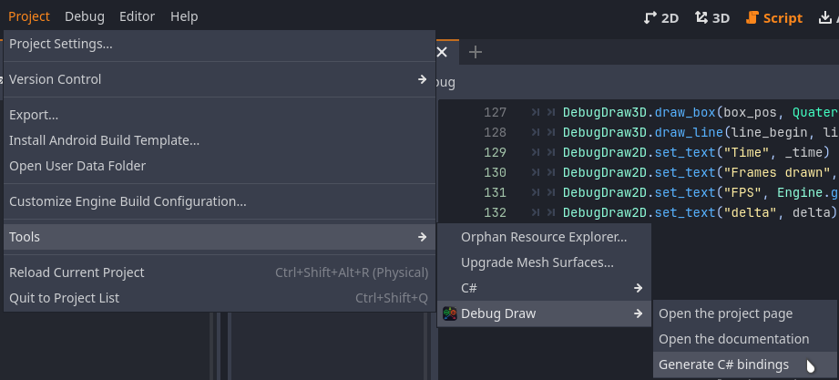
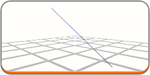

More examples can be found in the examples_dd3d/ folder.
Simple test:
func _process(delta: float) -> void:
var _time = Time.get_ticks_msec() / 1000.0
var box_pos = Vector3(0, sin(_time * 4), 0)
var line_begin = Vector3(-1, sin(_time * 4), 0)
var line_end = Vector3(1, cos(_time * 4), 0)
NAPI void set_text(godot::String key, godot::Variant value=godot::Variant(), int priority=0, godot::Color color_of_value=Colors::empty_color, real_t duration=-1)
NAPI void draw_box(const godot::Vector3 &position, const Quaternion &rotation, const godot::Vector3 &size, const godot::Color &color=Colors::empty_color, const bool &is_box_centered=false, const real_t &duration=0) FAKE_FUNC_IMPL
NAPI void draw_line(const godot::Vector3 &a, const godot::Vector3 &b, const godot::Color &color=Colors::empty_color, const real_t &duration=0) FAKE_FUNC_IMPL
An example of using scoped configs:
@tool
extends Node3D
func _ready():
func _process(delta):
if true:
_s.set_thickness(0.05)
NAPI Ref< DebugDraw3DScopeConfig > new_scoped_config()
NAPI Ref< DebugDraw3DScopeConfig > scoped_config() override
- Note
- If you want to use a non-standard Viewport for rendering a 3d scene, then do not forget to specify it in the scoped config!
CSharp
When you start the engine for the first time, bindings for C# will be generated automatically. If this does not happen, you can manually generate them through the Project - Tools - Debug Draw menu.

public override void _Process(float delta)
{
var _time = Time.GetTicksMsec() / 1000.0f;
var box_pos = new Vector3(0, Mathf.Sin(_time * 4f), 0);
var line_begin = new Vector3(-1, Mathf.Sin(_time * 4f), 0);
var line_end = new Vector3(1, Mathf.Cos(_time * 4f), 0);
DebugDraw3D.DrawBox(box_pos, Quaternion.Identity,
new Vector3(1, 2, 1),
new Color(0, 1, 0));
DebugDraw3D.DrawLine(line_begin, line_end,
new Color(1, 1, 0));
DebugDraw2D.SetText(
"Frames drawn", Engine.GetFramesDrawn());
DebugDraw2D.SetText(
"FPS", Engine.GetFramesPerSecond());
}
Singleton class for calling debugging 2D methods.
Definition debug_draw_2d.h:26
Singleton class for calling debugging 3D methods.
Definition debug_draw_3d.h:117
Scoped config's work similarly to the GDScript version, but require a manual Dispose or using using:
using (var _w1 =
DebugDraw3D.NewScopedConfig().SetViewport(someViewportHere).SetThickness(0.01f).SetNoDepthTest(
true))
{
}
- Warning
- C# bindings work using ClassDB, which greatly decreases its performance and it can run slower than GDScript. There is currently no way to fix this.
Aliases
If you don't want to write DebugDraw3D/DebugDraw2D every time, so you can use aliases for these singletons.
var _s = Dbg3.new_scoped_config().set_thickness(0.025).set_center_brightness(0.7)
Dbg3.draw_grid_xf(%Grid.global_transform, Vector2i(10,10), Color.LIGHT_GRAY)
Dbg2.set_text("Frametime", delta)
There is more information in the description of DebugDrawManager.
Scope configs
When using DebugDraw3D, you will probably want to use the scoped configurations DebugDraw3DScopeConfig. With this class you will be able to change the thickness of the geometry, the brightness of the volumetric shapes, the density of the sphere mesh and possibly other parameters in the future.

Project Settings
You can also explore other project settings in debug_draw_3d/settings.